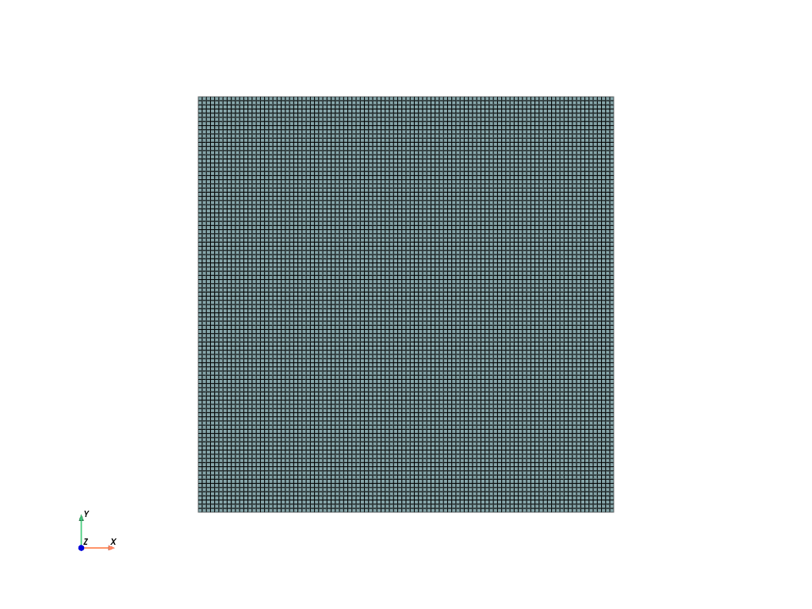

Un-coupled phase separation#
Code for Cahn-Hilliard phase separation without mechanical coupling
This is a two-dimensional simulation
Degrees of freedom#
chemical potential: mu
concentration: c
Units#
Length: um
Mass: kg
Time: s
Amount of substance: pmol
Temperature: K
Mass density: kg/um^3
Force: uN
Stress: MPa
Energy: pJ
Species concentration: pmol/um^3
Chemical potential: pJ/pmol
Molar volume: um^3/pmol
Species diffusivity: um^2/s
Boltzmann Constant: 1.38E-11 pJ/K
Gas constant: 8.3145 pJ/(pmol K)
Software:#
Dolfinx v0.8.0
Eric Stewart and Lallit Anand
ericstew@mit.edu and anand@mit.edu
June 2024
Import modules#
# Import FEniCSx/dolfinx
import dolfinx
# For numerical arrays
import numpy as np
# For MPI-based parallelization
from mpi4py import MPI
comm = MPI.COMM_WORLD
rank = comm.Get_rank()
# PETSc solvers
from petsc4py import PETSc
# specific functions from dolfinx modules
from dolfinx import fem, mesh, io, plot, log
from dolfinx.fem import (Constant, dirichletbc, Function, functionspace, Expression )
from dolfinx.fem.petsc import NonlinearProblem
from dolfinx.nls.petsc import NewtonSolver
from dolfinx.io import VTXWriter, XDMFFile
# specific functions from ufl modules
import ufl
from ufl import (TestFunctions, TrialFunction, Identity, grad, det, div, dev, inv, tr, sqrt, conditional ,\
lt, gt, dx, inner, derivative, dot, ln, split, exp, eq, cos, sin, acos, ge, le, outer, tanh,\
cosh, atan, atan2)
# basix finite elements (necessary for dolfinx v0.8.0)
import basix
from basix.ufl import element, mixed_element
# Matplotlib for plotting
import matplotlib.pyplot as plt
plt.close('all')
# For timing the code
from datetime import datetime
# Set level of detail for log messages (integer)
# Guide:
# CRITICAL = 50, // errors that may lead to data corruption
# ERROR = 40, // things that HAVE gone wrong
# WARNING = 30, // things that MAY go wrong later
# INFO = 20, // information of general interest (includes solver info)
# PROGRESS = 16, // what's happening (broadly)
# TRACE = 13, // what's happening (in detail)
# DBG = 10 // sundry
#
log.set_log_level(log.LogLevel.WARNING)
Define geometry#
# Create square mesh
L0 = 0.8 # 800 nm box. After Di Leo et al. (2014)
# Number of elements along each side
N = 100
domain = mesh.create_rectangle(MPI.COMM_WORLD, [[0.0,0.0], [L0,L0]],\
[N,N], mesh.CellType.quadrilateral)
# domain = mesh.create_rectangle(MPI.COMM_WORLD, [[0.0,0.0], [L0,L0]],\
# [N,N], mesh.CellType.triangle, diagonal=mesh.DiagonalType.crossed)
x = ufl.SpatialCoordinate(domain)
Identify the boundaries of the domain
# Identify the boundaries of the rectangle mesh
#
def xBot(x):
return np.isclose(x[0], 0)
def xTop(x):
return np.isclose(x[0], L0)
def yBot(x):
return np.isclose(x[1], 0)
def yTop(x):
return np.isclose(x[1], L0)
# Mark the sub-domains
boundaries = [(1, xBot),(2,xTop),(3,yBot),(4,yTop)]
# Build collections of facets on each subdomain and mark them appropriately.
facet_indices, facet_markers = [], [] # initalize empty collections of indices and markers.
fdim = domain.topology.dim - 1 # geometric dimension of the facet (mesh dimension - 1)
for (marker, locator) in boundaries:
facets = mesh.locate_entities(domain, fdim, locator) # an array of all the facets in a
# given subdomain ("locator")
facet_indices.append(facets) # add these facets to the collection.
facet_markers.append(np.full_like(facets, marker)) # mark them with the appropriate index.
# Format the facet indices and markers as required for use in dolfinx.
facet_indices = np.hstack(facet_indices).astype(np.int32)
facet_markers = np.hstack(facet_markers).astype(np.int32)
sorted_facets = np.argsort(facet_indices)
#
# Add these marked facets as "mesh tags" for later use in BCs.
facet_tags = mesh.meshtags(domain, fdim, facet_indices[sorted_facets], facet_markers[sorted_facets])
Visualize the reference configuration
import pyvista
pyvista.set_jupyter_backend('html')
from dolfinx.plot import vtk_mesh
pyvista.start_xvfb()
# initialize a plotter
plotter = pyvista.Plotter()
# Add the mesh.
topology, cell_types, geometry = plot.vtk_mesh(domain, domain.topology.dim)
grid = pyvista.UnstructuredGrid(topology, cell_types, geometry)
plotter.add_mesh(grid, show_edges=True) #, opacity=0.25)
plotter.view_xy()
#labels = dict(xlabel='X', ylabel='Y',zlabel='Z')
labels = dict(xlabel='X', ylabel='Y')
plotter.add_axes(**labels)
plotter.screenshot("results/square_mesh.png")
from IPython.display import Image
Image(filename='results/square_mesh.png')
# # Use the following commands for a zoom-able view
# if not pyvista.OFF_SCREEN:
# plotter.show()
# else:
# plotter.screenshot("square_mesh.png")

Define boundary and volume integration measure#
# Define the boundary integration measure "ds" using the facet tags,
# also specify the number of surface quadrature points.
ds = ufl.Measure('ds', domain=domain, subdomain_data=facet_tags, metadata={'quadrature_degree':4})
# Define the volume integration measure "dx"
# also specify the number of volume quadrature points.
dx = ufl.Measure('dx', domain=domain, metadata={'quadrature_degree': 4})
# Create facet to cell connectivity required to determine boundary facets.
domain.topology.create_connectivity(domain.topology.dim, domain.topology.dim)
domain.topology.create_connectivity(domain.topology.dim, domain.topology.dim-1)
domain.topology.create_connectivity(domain.topology.dim-1, domain.topology.dim)
# # Define facet normal
n2D = ufl.FacetNormal(domain)
n = ufl.as_vector([n2D[0], n2D[1], 0.0]) # define n as a 3D vector for later use
Material parmeters#
# Material parameters after Di Leo et al. (2014)
#
Omega = Constant(domain,PETSc.ScalarType(4.05)) # Molar volume, um^3/pmol
D = Constant(domain,PETSc.ScalarType(1e-2)) # Diffusivity, um^2/s
chi = Constant(domain,PETSc.ScalarType(3)) # Phase parameter, (-)
cMax = Constant(domain,PETSc.ScalarType(2.29e-2)) # Saturation concentration, pmol/um^3
lam = Constant(domain,PETSc.ScalarType(5.5749e-1)) # Interface parameter, (pJ/pmol) um^2
#
theta0 =Constant(domain,PETSc.ScalarType(298)) # Reference temperature, K
R_gas = Constant(domain,PETSc.ScalarType(8.3145)) # Gas constant, pJ/(pmol K)
RT = Constant(domain,PETSc.ScalarType(R_gas*theta0))
Function spaces#
# Define function space, scalar
#
P1 = element("Lagrange", domain.basix_cell(), 1) # For chemical potential and species concentration
#
TH = mixed_element([P1, P1]) # Mixed element
ME = functionspace(domain, TH) # Total space for all DOFs
# Define actual functions with the required DOFs
w = Function(ME)
mu, c = split(w) # chemical potential mu and concentration c
# A copy of functions to store values in the previous step for time-stepping
w_old = Function(ME)
mu_old, c_old = split(w_old)
# Define test functions
mu_test, c_test = TestFunctions(ME)
# Define trial functions needed for automatic differentiation
dw = TrialFunction(ME)
Initial conditions for cBar#
# Construct a function for specifying a random spatially-varying normalized concentration field "cBar"
#
Vmat = functionspace(domain, ("DG", 0)) # Create a DG0 function space on the domain
# Define a function for assigning different value at each coordinate of the domain,
# including a randomly-generated variance
#
def rand_cBar(avg, var):
# initialize the random number generator
#
rng = np.random.default_rng(42)
# Define an empty "cBar" function,
# which lives on the target DG0 function space
#
cBar = Function(Vmat)
# Now, actualy assign the desired values of the concentration to the new field
#
# First identify the coordinates of the domain
#
coords = Vmat.tabulate_dof_coordinates()
#
# Then loop over the coordinates and assign a randomly-generated value
#
for i in range(coords.shape[0]):
cBar_val = avg + var * (0.5 - rng.random())
cBar.vector.setValueLocal(i, cBar_val)
return cBar
# Specify a random distribution of intial values of cBar.
# Note that in the example below, the mean value of cBar will be 0.63 and
# the maximum variation will be \pm (var*0.5)=0.05
#
cBar_init = rand_cBar(0.63, 0.1)
Initial conditions for degrees of freedom c and mu#
# Get a scalar function space for interpolating initial conditions.
V1 = functionspace(domain, P1)
# write and interpolate the expression for initial normalized concentration c
#
c_init_expr = Expression(Omega*cMax*cBar_init, V1.element.interpolation_points())
#
w.sub(1).interpolate(c_init_expr)
w_old.sub(1).interpolate(c_init_expr)
# Write and inteprolate the expression for initial normalized chemical potential
#
mu_init_expr = Expression(ln(cBar_init/(1-cBar_init)) + chi*(1-2*cBar_init), V1.element.interpolation_points() )
#
w.sub(0).interpolate(mu_init_expr)
w_old.sub(0).interpolate(mu_init_expr)
Subroutines for kinematics and constitutive equations#
# Special gradient operators for plane strain
# The plane strain forms are actually not needed for thsi problem,
# but we might need such forms if we were to do am chemo-mechanically coupled simualtion later
#
# Gradient of vector field u
def pe_grad_vector(u):
grad_u = grad(u)
pe_grad_u = ufl.as_tensor([ [grad_u[0,0], grad_u[0,1], 0.0],
[grad_u[1,0], grad_u[1,1], 0.0],
[ 0.0, 0.0, 0.0] ])
return pe_grad_u
# Gradient of scalar field y
# (just need an extra zero for dimensions to work out)
def pe_grad_scalar(y):
grad_y = grad(y)
pe_grad_y = ufl.as_vector([grad_y[0], grad_y[1], 0.0])
return pe_grad_y
return Piola
# Species flux
def Flux_calc(mu, c):
#
cBar = c/(Omega*cMax) # normalized concentration
#
Mob = (D*c)/(Omega*RT)*(1-cBar)
#
Jmat = - RT* Mob * pe_grad_scalar(mu)
return Jmat
# Calculate the f^c term
def fc_calc(c):
#
cBar = c/(Omega*cMax) # normalized concentration
#
fc = RT*(ln(cBar/(1-cBar)) + chi*(1-2*cBar) )
#
return fc
Evaluate kinematics and constitutive relations#
# Calculate the normalized concentration cBar
cBar = c/(Omega*cMax)
# Calculate the Species flux
Jmat = Flux_calc(mu, c)
# Calculate the f^c term
fc = fc_calc(c)
Weak forms#
# Residuals:
# Res_0: Balance of mass (test fxn: mu)
# Res_1: chemical potential (test fxn: c)
# The weak form for the mass balance of mobile species
Res_0 = dot((c - c_old)/dk, mu_test)*dx \
- Omega*dot(Jmat , pe_grad_scalar(mu_test) )*dx
# The weak form for the concentration
Res_1 = dot(mu - fc/RT, c_test)*dx \
- dot( (lam/RT)*pe_grad_scalar(cBar), pe_grad_scalar(c_test))*dx
# Total weak form
Res = Res_0 + Res_1
# Automatic differentiation tangent:
a = derivative(Res, w, dw)
Set-up output files#
# Results file name
results_name = "2D_uncoupled_phase_separation"
# Function space for projection of results
P0 = element("DG", domain.basix_cell(), 1) # For chemical potential, and concentration
V1 = fem.functionspace(domain, P0) # Scalar function space
# Basic fields to write to output file
mu_vis = Function(V1)
mu_vis.name = "mu"
c_vis = Function(V1)
c_vis.name = "c"
# Calculated field to write to output file
cBar_vis = Function(V1)
cBar_vis.name = "cBar"
cBar_expr = Expression(cBar,V1.element.interpolation_points())
# Set up the output VTX files.
file_results = VTXWriter(
MPI.COMM_WORLD,
"results/" + results_name + ".bp",
[ # put the functions here you wish to write to output
mu_vis, c_vis, cBar_vis,
],
engine="BP4",
)
def writeResults(t):
# Output field interpolation
mu_vis.interpolate(w.sub(0))
c_vis.interpolate(w.sub(1))
cBar_vis.interpolate(cBar_expr)
# Write output fields
file_results.write(t)
Analysis Step#
# Give the step a descriptive name
step = "Phase-separate"
Boundary conditions#
# Nothing! Just let the system evolve on its own.
bcs = []
Define the nonlinear variational problem#
# Set up nonlinear problem
problem = NonlinearProblem(Res, w, bcs, a)
# The global newton solver and params
solver = NewtonSolver(MPI.COMM_WORLD, problem)
solver.convergence_criterion = "incremental"
solver.rtol = 1e-8
solver.atol = 1e-8
solver.max_it = 50
solver.report = True
solver.error_on_nonconvergence = False
# The Krylov solver parameters.
ksp = solver.krylov_solver
opts = PETSc.Options()
option_prefix = ksp.getOptionsPrefix()
opts[f"{option_prefix}ksp_type"] = "preonly"
opts[f"{option_prefix}pc_type"] = "lu" # do not use 'gamg' pre-conditioner
opts[f"{option_prefix}pc_factor_mat_solver_type"] = "mumps"
opts[f"{option_prefix}ksp_max_it"] = 30
ksp.setFromOptions()
Initialize arrays for storing output history#
# # Arrays for storing output history
# # totSteps = 100000
# # timeHist0 = np.zeros(shape=[totSteps])
# # timeHist1 = np.zeros(shape=[totSteps])
# # timeHist2 = np.zeros(shape=[totSteps])
# # timeHist3 = np.zeros(shape=[totSteps])
# # #
# # timeHist3[0] = mu0 # Initialize the chemical potential
# Initialize a counter for reporting data
ii = 0
# Write initial state to file
writeResults(t=0.0)
Start calculation loop#
print("------------------------------------")
print("Simulation start")
print("------------------------------------")
# Store start time
startTime = datetime.now()
# Time-stepping solution procedure loop
while (round(t + dt, 9) <= Ttot):
# increment time
t += dt
# increment counter
ii += 1
# Solve the problem
(iter, converged) = solver.solve(w)
# Now we start the adaptive time-stepping procedure
#
# First, we check if the newton solver actually converged.
if converged:
# Collect results from MPI ghost processes
w.x.scatter_forward()
# Write output to file
writeResults(t)
# If the solver converged, we print the status of the solver,
# perform adaptive time-stepping updates, output results, and
# update degrees of freedom for the next step, w_old <- w.
# print progress of calculation periodically
if ii%1 == 0:
now = datetime.now()
current_time = now.strftime("%H:%M:%S")
print("Step: {} | Increment: {} | Iterations: {}".format(step, ii, iter))
print("Simulation Time: {} s | dt: {} s".format(round(t,2), round(dt, 3)))
print()
# Iteration-based adaptive time-stepping
#
# If the newton solver takes 2 or less iterations,
# increase the time step by a factor of 1.5:
if ((iter<=4) and (dt<25)):
dt = 1.5*dt
dk.value = dt
# If the newton solver takes 8 or more iterations,
# decrease the time step by a factor of 2:
elif iter>=8:
dt = dt/2
dk.value = dt
# otherwise the newton solver took 3-4 iterations,
# in which case leave the time step alone
# update the DOFs for the next step.
w_old.x.array[:] = w.x.array
# If the solver doesn't converge we have to back up in time,
# cut the size of the time step, and try solving again.
else: # not(converged)
# first, we back up in time
# ( to undo the current time step )
t = t - float(dk)
# Then, we cut back on the time step we're attempting.
# (by a factor of 2)
dt = dt/2
dk.value = dt
# Re-set the DOFs to their value before the failed step.
w.x.array[:] = w_old.x.array
# Set up nonlinear problem
problem = NonlinearProblem(Res, w, bcs, a)
# The global newton solver and params
solver = NewtonSolver(MPI.COMM_WORLD, problem)
solver.convergence_criterion = "incremental"
solver.rtol = 1e-8
solver.atol = 1e-8
solver.max_it = 50
solver.report = True
solver.error_on_nonconvergence = False
# close the output file.
file_results.close()
# End analysis
print("-----------------------------------------")
print("End computation")
# Report elapsed real time for the analysis
endTime = datetime.now()
elapseTime = endTime - startTime
print("------------------------------------------")
print("Elapsed real time: {}".format(elapseTime))
print("------------------------------------------")
------------------------------------
Simulation start
------------------------------------
Step: Phase-separate | Increment: 1 | Iterations: 4
Simulation Time: 0.01 s | dt: 0.01 s
Step: Phase-separate | Increment: 2 | Iterations: 3
Simulation Time: 0.03 s | dt: 0.015 s
Step: Phase-separate | Increment: 3 | Iterations: 3
Simulation Time: 0.05 s | dt: 0.022 s
Step: Phase-separate | Increment: 4 | Iterations: 4
Simulation Time: 0.08 s | dt: 0.034 s
Step: Phase-separate | Increment: 5 | Iterations: 4
Simulation Time: 0.13 s | dt: 0.051 s
Step: Phase-separate | Increment: 6 | Iterations: 4
Simulation Time: 0.21 s | dt: 0.076 s
2024-06-20 16:05:22.548 (37319.373s) [main ] NewtonSolver.cpp:270 WARN| Newton solver did not converge.
Step: Phase-separate | Increment: 8 | Iterations: 4
Simulation Time: 0.26 s | dt: 0.057 s
Step: Phase-separate | Increment: 9 | Iterations: 7
Simulation Time: 0.35 s | dt: 0.085 s
2024-06-20 16:05:23.935 (37320.760s) [main ] NewtonSolver.cpp:270 WARN| Newton solver did not converge.
Step: Phase-separate | Increment: 11 | Iterations: 5
Simulation Time: 0.39 s | dt: 0.043 s
Step: Phase-separate | Increment: 12 | Iterations: 5
Simulation Time: 0.44 s | dt: 0.043 s
Step: Phase-separate | Increment: 13 | Iterations: 5
Simulation Time: 0.48 s | dt: 0.043 s
Step: Phase-separate | Increment: 14 | Iterations: 5
Simulation Time: 0.52 s | dt: 0.043 s
Step: Phase-separate | Increment: 15 | Iterations: 5
Simulation Time: 0.56 s | dt: 0.043 s
Step: Phase-separate | Increment: 16 | Iterations: 5
Simulation Time: 0.61 s | dt: 0.043 s
Step: Phase-separate | Increment: 17 | Iterations: 5
Simulation Time: 0.65 s | dt: 0.043 s
Step: Phase-separate | Increment: 18 | Iterations: 5
Simulation Time: 0.69 s | dt: 0.043 s
Step: Phase-separate | Increment: 19 | Iterations: 5
Simulation Time: 0.73 s | dt: 0.043 s
Step: Phase-separate | Increment: 20 | Iterations: 5
Simulation Time: 0.78 s | dt: 0.043 s
Step: Phase-separate | Increment: 21 | Iterations: 5
Simulation Time: 0.82 s | dt: 0.043 s
Step: Phase-separate | Increment: 22 | Iterations: 5
Simulation Time: 0.86 s | dt: 0.043 s
Step: Phase-separate | Increment: 23 | Iterations: 5
Simulation Time: 0.91 s | dt: 0.043 s
Step: Phase-separate | Increment: 24 | Iterations: 5
Simulation Time: 0.95 s | dt: 0.043 s
Step: Phase-separate | Increment: 25 | Iterations: 4
Simulation Time: 0.99 s | dt: 0.043 s
Step: Phase-separate | Increment: 26 | Iterations: 5
Simulation Time: 1.05 s | dt: 0.064 s
Step: Phase-separate | Increment: 27 | Iterations: 5
Simulation Time: 1.12 s | dt: 0.064 s
Step: Phase-separate | Increment: 28 | Iterations: 5
Simulation Time: 1.18 s | dt: 0.064 s
Step: Phase-separate | Increment: 29 | Iterations: 5
Simulation Time: 1.25 s | dt: 0.064 s
Step: Phase-separate | Increment: 30 | Iterations: 5
Simulation Time: 1.31 s | dt: 0.064 s
Step: Phase-separate | Increment: 31 | Iterations: 5
Simulation Time: 1.38 s | dt: 0.064 s
Step: Phase-separate | Increment: 32 | Iterations: 5
Simulation Time: 1.44 s | dt: 0.064 s
Step: Phase-separate | Increment: 33 | Iterations: 5
Simulation Time: 1.5 s | dt: 0.064 s
Step: Phase-separate | Increment: 34 | Iterations: 5
Simulation Time: 1.57 s | dt: 0.064 s
Step: Phase-separate | Increment: 35 | Iterations: 5
Simulation Time: 1.63 s | dt: 0.064 s
Step: Phase-separate | Increment: 36 | Iterations: 5
Simulation Time: 1.7 s | dt: 0.064 s
Step: Phase-separate | Increment: 37 | Iterations: 5
Simulation Time: 1.76 s | dt: 0.064 s
Step: Phase-separate | Increment: 38 | Iterations: 5
Simulation Time: 1.82 s | dt: 0.064 s
Step: Phase-separate | Increment: 39 | Iterations: 5
Simulation Time: 1.89 s | dt: 0.064 s
Step: Phase-separate | Increment: 40 | Iterations: 5
Simulation Time: 1.95 s | dt: 0.064 s
Step: Phase-separate | Increment: 41 | Iterations: 5
Simulation Time: 2.02 s | dt: 0.064 s
Step: Phase-separate | Increment: 42 | Iterations: 5
Simulation Time: 2.08 s | dt: 0.064 s
Step: Phase-separate | Increment: 43 | Iterations: 5
Simulation Time: 2.14 s | dt: 0.064 s
Step: Phase-separate | Increment: 44 | Iterations: 5
Simulation Time: 2.21 s | dt: 0.064 s
Step: Phase-separate | Increment: 45 | Iterations: 5
Simulation Time: 2.27 s | dt: 0.064 s
Step: Phase-separate | Increment: 46 | Iterations: 5
Simulation Time: 2.34 s | dt: 0.064 s
Step: Phase-separate | Increment: 47 | Iterations: 5
Simulation Time: 2.4 s | dt: 0.064 s
Step: Phase-separate | Increment: 48 | Iterations: 5
Simulation Time: 2.46 s | dt: 0.064 s
Step: Phase-separate | Increment: 49 | Iterations: 5
Simulation Time: 2.53 s | dt: 0.064 s
Step: Phase-separate | Increment: 50 | Iterations: 4
Simulation Time: 2.59 s | dt: 0.064 s
Step: Phase-separate | Increment: 51 | Iterations: 5
Simulation Time: 2.69 s | dt: 0.096 s
Step: Phase-separate | Increment: 52 | Iterations: 5
Simulation Time: 2.78 s | dt: 0.096 s
Step: Phase-separate | Increment: 53 | Iterations: 5
Simulation Time: 2.88 s | dt: 0.096 s
Step: Phase-separate | Increment: 54 | Iterations: 5
Simulation Time: 2.98 s | dt: 0.096 s
Step: Phase-separate | Increment: 55 | Iterations: 5
Simulation Time: 3.07 s | dt: 0.096 s
Step: Phase-separate | Increment: 56 | Iterations: 4
Simulation Time: 3.17 s | dt: 0.096 s
Step: Phase-separate | Increment: 57 | Iterations: 5
Simulation Time: 3.31 s | dt: 0.144 s
Step: Phase-separate | Increment: 58 | Iterations: 5
Simulation Time: 3.46 s | dt: 0.144 s
Step: Phase-separate | Increment: 59 | Iterations: 6
Simulation Time: 3.6 s | dt: 0.144 s
Step: Phase-separate | Increment: 60 | Iterations: 6
Simulation Time: 3.75 s | dt: 0.144 s
Step: Phase-separate | Increment: 61 | Iterations: 6
Simulation Time: 3.89 s | dt: 0.144 s
Step: Phase-separate | Increment: 62 | Iterations: 6
Simulation Time: 4.03 s | dt: 0.144 s
Step: Phase-separate | Increment: 63 | Iterations: 7
Simulation Time: 4.18 s | dt: 0.144 s
Step: Phase-separate | Increment: 64 | Iterations: 6
Simulation Time: 4.32 s | dt: 0.144 s
Step: Phase-separate | Increment: 65 | Iterations: 5
Simulation Time: 4.47 s | dt: 0.144 s
Step: Phase-separate | Increment: 66 | Iterations: 5
Simulation Time: 4.61 s | dt: 0.144 s
Step: Phase-separate | Increment: 67 | Iterations: 5
Simulation Time: 4.76 s | dt: 0.144 s
Step: Phase-separate | Increment: 68 | Iterations: 5
Simulation Time: 4.9 s | dt: 0.144 s
Step: Phase-separate | Increment: 69 | Iterations: 5
Simulation Time: 5.04 s | dt: 0.144 s
Step: Phase-separate | Increment: 70 | Iterations: 5
Simulation Time: 5.19 s | dt: 0.144 s
Step: Phase-separate | Increment: 71 | Iterations: 5
Simulation Time: 5.33 s | dt: 0.144 s
Step: Phase-separate | Increment: 72 | Iterations: 5
Simulation Time: 5.48 s | dt: 0.144 s
Step: Phase-separate | Increment: 73 | Iterations: 5
Simulation Time: 5.62 s | dt: 0.144 s
Step: Phase-separate | Increment: 74 | Iterations: 5
Simulation Time: 5.76 s | dt: 0.144 s
Step: Phase-separate | Increment: 75 | Iterations: 6
Simulation Time: 5.91 s | dt: 0.144 s
Step: Phase-separate | Increment: 76 | Iterations: 6
Simulation Time: 6.05 s | dt: 0.144 s
Step: Phase-separate | Increment: 77 | Iterations: 5
Simulation Time: 6.2 s | dt: 0.144 s
Step: Phase-separate | Increment: 78 | Iterations: 5
Simulation Time: 6.34 s | dt: 0.144 s
Step: Phase-separate | Increment: 79 | Iterations: 6
Simulation Time: 6.49 s | dt: 0.144 s
Step: Phase-separate | Increment: 80 | Iterations: 6
Simulation Time: 6.63 s | dt: 0.144 s
Step: Phase-separate | Increment: 81 | Iterations: 5
Simulation Time: 6.77 s | dt: 0.144 s
Step: Phase-separate | Increment: 82 | Iterations: 5
Simulation Time: 6.92 s | dt: 0.144 s
Step: Phase-separate | Increment: 83 | Iterations: 5
Simulation Time: 7.06 s | dt: 0.144 s
Step: Phase-separate | Increment: 84 | Iterations: 5
Simulation Time: 7.21 s | dt: 0.144 s
Step: Phase-separate | Increment: 85 | Iterations: 5
Simulation Time: 7.35 s | dt: 0.144 s
Step: Phase-separate | Increment: 86 | Iterations: 6
Simulation Time: 7.49 s | dt: 0.144 s
Step: Phase-separate | Increment: 87 | Iterations: 6
Simulation Time: 7.64 s | dt: 0.144 s
Step: Phase-separate | Increment: 88 | Iterations: 6
Simulation Time: 7.78 s | dt: 0.144 s
Step: Phase-separate | Increment: 89 | Iterations: 5
Simulation Time: 7.93 s | dt: 0.144 s
Step: Phase-separate | Increment: 90 | Iterations: 5
Simulation Time: 8.07 s | dt: 0.144 s
Step: Phase-separate | Increment: 91 | Iterations: 5
Simulation Time: 8.22 s | dt: 0.144 s
Step: Phase-separate | Increment: 92 | Iterations: 5
Simulation Time: 8.36 s | dt: 0.144 s
Step: Phase-separate | Increment: 93 | Iterations: 5
Simulation Time: 8.5 s | dt: 0.144 s
Step: Phase-separate | Increment: 94 | Iterations: 5
Simulation Time: 8.65 s | dt: 0.144 s
Step: Phase-separate | Increment: 95 | Iterations: 5
Simulation Time: 8.79 s | dt: 0.144 s
Step: Phase-separate | Increment: 96 | Iterations: 5
Simulation Time: 8.94 s | dt: 0.144 s
Step: Phase-separate | Increment: 97 | Iterations: 4
Simulation Time: 9.08 s | dt: 0.144 s
Step: Phase-separate | Increment: 98 | Iterations: 5
Simulation Time: 9.3 s | dt: 0.216 s
Step: Phase-separate | Increment: 99 | Iterations: 5
Simulation Time: 9.51 s | dt: 0.216 s
Step: Phase-separate | Increment: 100 | Iterations: 5
Simulation Time: 9.73 s | dt: 0.216 s
Step: Phase-separate | Increment: 101 | Iterations: 5
Simulation Time: 9.95 s | dt: 0.216 s
Step: Phase-separate | Increment: 102 | Iterations: 5
Simulation Time: 10.16 s | dt: 0.216 s
Step: Phase-separate | Increment: 103 | Iterations: 5
Simulation Time: 10.38 s | dt: 0.216 s
Step: Phase-separate | Increment: 104 | Iterations: 5
Simulation Time: 10.59 s | dt: 0.216 s
Step: Phase-separate | Increment: 105 | Iterations: 5
Simulation Time: 10.81 s | dt: 0.216 s
Step: Phase-separate | Increment: 106 | Iterations: 5
Simulation Time: 11.03 s | dt: 0.216 s
Step: Phase-separate | Increment: 107 | Iterations: 7
Simulation Time: 11.24 s | dt: 0.216 s
Step: Phase-separate | Increment: 108 | Iterations: 7
Simulation Time: 11.46 s | dt: 0.216 s
Step: Phase-separate | Increment: 109 | Iterations: 5
Simulation Time: 11.67 s | dt: 0.216 s
Step: Phase-separate | Increment: 110 | Iterations: 7
Simulation Time: 11.89 s | dt: 0.216 s
Step: Phase-separate | Increment: 111 | Iterations: 6
Simulation Time: 12.11 s | dt: 0.216 s
Step: Phase-separate | Increment: 112 | Iterations: 5
Simulation Time: 12.32 s | dt: 0.216 s
Step: Phase-separate | Increment: 113 | Iterations: 5
Simulation Time: 12.54 s | dt: 0.216 s
Step: Phase-separate | Increment: 114 | Iterations: 4
Simulation Time: 12.76 s | dt: 0.216 s
Step: Phase-separate | Increment: 115 | Iterations: 4
Simulation Time: 13.08 s | dt: 0.324 s
Step: Phase-separate | Increment: 116 | Iterations: 5
Simulation Time: 13.57 s | dt: 0.487 s
Step: Phase-separate | Increment: 117 | Iterations: 5
Simulation Time: 14.05 s | dt: 0.487 s
Step: Phase-separate | Increment: 118 | Iterations: 5
Simulation Time: 14.54 s | dt: 0.487 s
Step: Phase-separate | Increment: 119 | Iterations: 5
Simulation Time: 15.03 s | dt: 0.487 s
Step: Phase-separate | Increment: 120 | Iterations: 6
Simulation Time: 15.51 s | dt: 0.487 s
Step: Phase-separate | Increment: 121 | Iterations: 7
Simulation Time: 16.0 s | dt: 0.487 s
2024-06-20 16:05:54.624 (37351.449s) [main ] NewtonSolver.cpp:270 WARN| Newton solver did not converge.
Step: Phase-separate | Increment: 123 | Iterations: 7
Simulation Time: 16.24 s | dt: 0.243 s
Step: Phase-separate | Increment: 124 | Iterations: 5
Simulation Time: 16.49 s | dt: 0.243 s
Step: Phase-separate | Increment: 125 | Iterations: 4
Simulation Time: 16.73 s | dt: 0.243 s
Step: Phase-separate | Increment: 126 | Iterations: 4
Simulation Time: 17.09 s | dt: 0.365 s
Step: Phase-separate | Increment: 127 | Iterations: 5
Simulation Time: 17.64 s | dt: 0.547 s
Step: Phase-separate | Increment: 128 | Iterations: 5
Simulation Time: 18.19 s | dt: 0.547 s
Step: Phase-separate | Increment: 129 | Iterations: 5
Simulation Time: 18.74 s | dt: 0.547 s
Step: Phase-separate | Increment: 130 | Iterations: 5
Simulation Time: 19.28 s | dt: 0.547 s
Step: Phase-separate | Increment: 131 | Iterations: 7
Simulation Time: 19.83 s | dt: 0.547 s
Step: Phase-separate | Increment: 132 | Iterations: 8
Simulation Time: 20.38 s | dt: 0.547 s
Step: Phase-separate | Increment: 133 | Iterations: 6
Simulation Time: 20.65 s | dt: 0.274 s
Step: Phase-separate | Increment: 134 | Iterations: 5
Simulation Time: 20.93 s | dt: 0.274 s
Step: Phase-separate | Increment: 135 | Iterations: 4
Simulation Time: 21.2 s | dt: 0.274 s
Step: Phase-separate | Increment: 136 | Iterations: 5
Simulation Time: 21.61 s | dt: 0.411 s
Step: Phase-separate | Increment: 137 | Iterations: 5
Simulation Time: 22.02 s | dt: 0.411 s
Step: Phase-separate | Increment: 138 | Iterations: 5
Simulation Time: 22.43 s | dt: 0.411 s
Step: Phase-separate | Increment: 139 | Iterations: 5
Simulation Time: 22.84 s | dt: 0.411 s
Step: Phase-separate | Increment: 140 | Iterations: 5
Simulation Time: 23.25 s | dt: 0.411 s
Step: Phase-separate | Increment: 141 | Iterations: 8
Simulation Time: 23.66 s | dt: 0.411 s
Step: Phase-separate | Increment: 142 | Iterations: 6
Simulation Time: 23.87 s | dt: 0.205 s
Step: Phase-separate | Increment: 143 | Iterations: 7
Simulation Time: 24.07 s | dt: 0.205 s
Step: Phase-separate | Increment: 144 | Iterations: 6
Simulation Time: 24.28 s | dt: 0.205 s
Step: Phase-separate | Increment: 145 | Iterations: 5
Simulation Time: 24.48 s | dt: 0.205 s
Step: Phase-separate | Increment: 146 | Iterations: 4
Simulation Time: 24.69 s | dt: 0.205 s
Step: Phase-separate | Increment: 147 | Iterations: 5
Simulation Time: 25.0 s | dt: 0.308 s
Step: Phase-separate | Increment: 148 | Iterations: 5
Simulation Time: 25.31 s | dt: 0.308 s
Step: Phase-separate | Increment: 149 | Iterations: 5
Simulation Time: 25.61 s | dt: 0.308 s
Step: Phase-separate | Increment: 150 | Iterations: 5
Simulation Time: 25.92 s | dt: 0.308 s
Step: Phase-separate | Increment: 151 | Iterations: 5
Simulation Time: 26.23 s | dt: 0.308 s
Step: Phase-separate | Increment: 152 | Iterations: 6
Simulation Time: 26.54 s | dt: 0.308 s
2024-06-20 16:06:03.818 (37360.643s) [main ] NewtonSolver.cpp:270 WARN| Newton solver did not converge.
Step: Phase-separate | Increment: 154 | Iterations: 5
Simulation Time: 26.69 s | dt: 0.154 s
Step: Phase-separate | Increment: 155 | Iterations: 6
Simulation Time: 26.84 s | dt: 0.154 s
Step: Phase-separate | Increment: 156 | Iterations: 5
Simulation Time: 27.0 s | dt: 0.154 s
Step: Phase-separate | Increment: 157 | Iterations: 5
Simulation Time: 27.15 s | dt: 0.154 s
Step: Phase-separate | Increment: 158 | Iterations: 4
Simulation Time: 27.31 s | dt: 0.154 s
Step: Phase-separate | Increment: 159 | Iterations: 4
Simulation Time: 27.54 s | dt: 0.231 s
Step: Phase-separate | Increment: 160 | Iterations: 4
Simulation Time: 27.88 s | dt: 0.346 s
Step: Phase-separate | Increment: 161 | Iterations: 4
Simulation Time: 28.4 s | dt: 0.52 s
Step: Phase-separate | Increment: 162 | Iterations: 4
Simulation Time: 29.18 s | dt: 0.779 s
Step: Phase-separate | Increment: 163 | Iterations: 5
Simulation Time: 30.35 s | dt: 1.169 s
Step: Phase-separate | Increment: 164 | Iterations: 5
Simulation Time: 31.52 s | dt: 1.169 s
Step: Phase-separate | Increment: 165 | Iterations: 5
Simulation Time: 32.69 s | dt: 1.169 s
Step: Phase-separate | Increment: 166 | Iterations: 5
Simulation Time: 33.86 s | dt: 1.169 s
Step: Phase-separate | Increment: 167 | Iterations: 5
Simulation Time: 35.03 s | dt: 1.169 s
Step: Phase-separate | Increment: 168 | Iterations: 5
Simulation Time: 36.2 s | dt: 1.169 s
Step: Phase-separate | Increment: 169 | Iterations: 5
Simulation Time: 37.37 s | dt: 1.169 s
Step: Phase-separate | Increment: 170 | Iterations: 5
Simulation Time: 38.53 s | dt: 1.169 s
Step: Phase-separate | Increment: 171 | Iterations: 4
Simulation Time: 39.7 s | dt: 1.169 s
Step: Phase-separate | Increment: 172 | Iterations: 5
Simulation Time: 41.46 s | dt: 1.754 s
Step: Phase-separate | Increment: 173 | Iterations: 5
Simulation Time: 43.21 s | dt: 1.754 s
Step: Phase-separate | Increment: 174 | Iterations: 5
Simulation Time: 44.96 s | dt: 1.754 s
Step: Phase-separate | Increment: 175 | Iterations: 5
Simulation Time: 46.72 s | dt: 1.754 s
Step: Phase-separate | Increment: 176 | Iterations: 5
Simulation Time: 48.47 s | dt: 1.754 s
Step: Phase-separate | Increment: 177 | Iterations: 5
Simulation Time: 50.23 s | dt: 1.754 s
Step: Phase-separate | Increment: 178 | Iterations: 5
Simulation Time: 51.98 s | dt: 1.754 s
Step: Phase-separate | Increment: 179 | Iterations: 6
Simulation Time: 53.73 s | dt: 1.754 s
Step: Phase-separate | Increment: 180 | Iterations: 7
Simulation Time: 55.49 s | dt: 1.754 s
2024-06-20 16:06:11.574 (37368.398s) [main ] NewtonSolver.cpp:270 WARN| Newton solver did not converge.
2024-06-20 16:06:12.436 (37369.260s) [main ] NewtonSolver.cpp:270 WARN| Newton solver did not converge.
Step: Phase-separate | Increment: 183 | Iterations: 5
Simulation Time: 55.92 s | dt: 0.438 s
Step: Phase-separate | Increment: 184 | Iterations: 7
Simulation Time: 56.36 s | dt: 0.438 s
2024-06-20 16:06:13.876 (37370.700s) [main ] NewtonSolver.cpp:270 WARN| Newton solver did not converge.
Step: Phase-separate | Increment: 186 | Iterations: 6
Simulation Time: 56.58 s | dt: 0.219 s
Step: Phase-separate | Increment: 187 | Iterations: 6
Simulation Time: 56.8 s | dt: 0.219 s
Step: Phase-separate | Increment: 188 | Iterations: 5
Simulation Time: 57.02 s | dt: 0.219 s
Step: Phase-separate | Increment: 189 | Iterations: 5
Simulation Time: 57.24 s | dt: 0.219 s
Step: Phase-separate | Increment: 190 | Iterations: 4
Simulation Time: 57.46 s | dt: 0.219 s
Step: Phase-separate | Increment: 191 | Iterations: 5
Simulation Time: 57.79 s | dt: 0.329 s
Step: Phase-separate | Increment: 192 | Iterations: 5
Simulation Time: 58.12 s | dt: 0.329 s
Step: Phase-separate | Increment: 193 | Iterations: 6
Simulation Time: 58.45 s | dt: 0.329 s
Step: Phase-separate | Increment: 194 | Iterations: 6
Simulation Time: 58.77 s | dt: 0.329 s
2024-06-20 16:06:17.119 (37373.942s) [main ] NewtonSolver.cpp:270 WARN| Newton solver did not converge.
Step: Phase-separate | Increment: 196 | Iterations: 6
Simulation Time: 58.94 s | dt: 0.164 s
Step: Phase-separate | Increment: 197 | Iterations: 5
Simulation Time: 59.1 s | dt: 0.164 s
Step: Phase-separate | Increment: 198 | Iterations: 5
Simulation Time: 59.27 s | dt: 0.164 s
Step: Phase-separate | Increment: 199 | Iterations: 4
Simulation Time: 59.43 s | dt: 0.164 s
Step: Phase-separate | Increment: 200 | Iterations: 4
Simulation Time: 59.68 s | dt: 0.247 s
Step: Phase-separate | Increment: 201 | Iterations: 4
Simulation Time: 60.05 s | dt: 0.37 s
Step: Phase-separate | Increment: 202 | Iterations: 4
Simulation Time: 60.6 s | dt: 0.555 s
Step: Phase-separate | Increment: 203 | Iterations: 5
Simulation Time: 61.44 s | dt: 0.832 s
Step: Phase-separate | Increment: 204 | Iterations: 5
Simulation Time: 62.27 s | dt: 0.832 s
Step: Phase-separate | Increment: 205 | Iterations: 5
Simulation Time: 63.1 s | dt: 0.832 s
Step: Phase-separate | Increment: 206 | Iterations: 5
Simulation Time: 63.93 s | dt: 0.832 s
Step: Phase-separate | Increment: 207 | Iterations: 5
Simulation Time: 64.76 s | dt: 0.832 s
Step: Phase-separate | Increment: 208 | Iterations: 6
Simulation Time: 65.6 s | dt: 0.832 s
2024-06-20 16:06:21.145 (37377.969s) [main ] NewtonSolver.cpp:270 WARN| Newton solver did not converge.
Step: Phase-separate | Increment: 210 | Iterations: 6
Simulation Time: 66.01 s | dt: 0.416 s
Step: Phase-separate | Increment: 211 | Iterations: 6
Simulation Time: 66.43 s | dt: 0.416 s
Step: Phase-separate | Increment: 212 | Iterations: 7
Simulation Time: 66.84 s | dt: 0.416 s
Step: Phase-separate | Increment: 213 | Iterations: 5
Simulation Time: 67.26 s | dt: 0.416 s
Step: Phase-separate | Increment: 214 | Iterations: 4
Simulation Time: 67.68 s | dt: 0.416 s
Step: Phase-separate | Increment: 215 | Iterations: 4
Simulation Time: 68.3 s | dt: 0.624 s
Step: Phase-separate | Increment: 216 | Iterations: 5
Simulation Time: 69.24 s | dt: 0.936 s
Step: Phase-separate | Increment: 217 | Iterations: 5
Simulation Time: 70.17 s | dt: 0.936 s
Step: Phase-separate | Increment: 218 | Iterations: 5
Simulation Time: 71.11 s | dt: 0.936 s
Step: Phase-separate | Increment: 219 | Iterations: 7
Simulation Time: 72.05 s | dt: 0.936 s
2024-06-20 16:06:24.731 (37381.554s) [main ] NewtonSolver.cpp:270 WARN| Newton solver did not converge.
Step: Phase-separate | Increment: 221 | Iterations: 6
Simulation Time: 72.51 s | dt: 0.468 s
2024-06-20 16:06:25.801 (37382.625s) [main ] NewtonSolver.cpp:270 WARN| Newton solver did not converge.
Step: Phase-separate | Increment: 223 | Iterations: 6
Simulation Time: 72.75 s | dt: 0.234 s
Step: Phase-separate | Increment: 224 | Iterations: 5
Simulation Time: 72.98 s | dt: 0.234 s
Step: Phase-separate | Increment: 225 | Iterations: 5
Simulation Time: 73.22 s | dt: 0.234 s
Step: Phase-separate | Increment: 226 | Iterations: 4
Simulation Time: 73.45 s | dt: 0.234 s
Step: Phase-separate | Increment: 227 | Iterations: 4
Simulation Time: 73.8 s | dt: 0.351 s
Step: Phase-separate | Increment: 228 | Iterations: 5
Simulation Time: 74.33 s | dt: 0.527 s
Step: Phase-separate | Increment: 229 | Iterations: 6
Simulation Time: 74.86 s | dt: 0.527 s
Step: Phase-separate | Increment: 230 | Iterations: 8
Simulation Time: 75.38 s | dt: 0.527 s
Step: Phase-separate | Increment: 231 | Iterations: 7
Simulation Time: 75.65 s | dt: 0.263 s
Step: Phase-separate | Increment: 232 | Iterations: 5
Simulation Time: 75.91 s | dt: 0.263 s
Step: Phase-separate | Increment: 233 | Iterations: 5
Simulation Time: 76.17 s | dt: 0.263 s
Step: Phase-separate | Increment: 234 | Iterations: 4
Simulation Time: 76.44 s | dt: 0.263 s
Step: Phase-separate | Increment: 235 | Iterations: 4
Simulation Time: 76.83 s | dt: 0.395 s
Step: Phase-separate | Increment: 236 | Iterations: 4
Simulation Time: 77.42 s | dt: 0.592 s
Step: Phase-separate | Increment: 237 | Iterations: 4
Simulation Time: 78.31 s | dt: 0.889 s
Step: Phase-separate | Increment: 238 | Iterations: 5
Simulation Time: 79.64 s | dt: 1.333 s
Step: Phase-separate | Increment: 239 | Iterations: 5
Simulation Time: 80.98 s | dt: 1.333 s
Step: Phase-separate | Increment: 240 | Iterations: 5
Simulation Time: 82.31 s | dt: 1.333 s
Step: Phase-separate | Increment: 241 | Iterations: 5
Simulation Time: 83.64 s | dt: 1.333 s
Step: Phase-separate | Increment: 242 | Iterations: 5
Simulation Time: 84.98 s | dt: 1.333 s
Step: Phase-separate | Increment: 243 | Iterations: 5
Simulation Time: 86.31 s | dt: 1.333 s
Step: Phase-separate | Increment: 244 | Iterations: 5
Simulation Time: 87.64 s | dt: 1.333 s
Step: Phase-separate | Increment: 245 | Iterations: 6
Simulation Time: 88.98 s | dt: 1.333 s
Step: Phase-separate | Increment: 246 | Iterations: 6
Simulation Time: 90.31 s | dt: 1.333 s
2024-06-20 16:06:33.053 (37389.877s) [main ] NewtonSolver.cpp:270 WARN| Newton solver did not converge.
Step: Phase-separate | Increment: 248 | Iterations: 6
Simulation Time: 90.98 s | dt: 0.667 s
2024-06-20 16:06:34.201 (37391.025s) [main ] NewtonSolver.cpp:270 WARN| Newton solver did not converge.
Step: Phase-separate | Increment: 250 | Iterations: 6
Simulation Time: 91.31 s | dt: 0.333 s
Step: Phase-separate | Increment: 251 | Iterations: 8
Simulation Time: 91.64 s | dt: 0.333 s
Step: Phase-separate | Increment: 252 | Iterations: 6
Simulation Time: 91.81 s | dt: 0.167 s
Step: Phase-separate | Increment: 253 | Iterations: 5
Simulation Time: 91.98 s | dt: 0.167 s
Step: Phase-separate | Increment: 254 | Iterations: 4
Simulation Time: 92.14 s | dt: 0.167 s
Step: Phase-separate | Increment: 255 | Iterations: 4
Simulation Time: 92.39 s | dt: 0.25 s
Step: Phase-separate | Increment: 256 | Iterations: 4
Simulation Time: 92.77 s | dt: 0.375 s
Step: Phase-separate | Increment: 257 | Iterations: 4
Simulation Time: 93.33 s | dt: 0.562 s
Step: Phase-separate | Increment: 258 | Iterations: 4
Simulation Time: 94.17 s | dt: 0.844 s
Step: Phase-separate | Increment: 259 | Iterations: 4
Simulation Time: 95.44 s | dt: 1.265 s
Step: Phase-separate | Increment: 260 | Iterations: 4
Simulation Time: 97.34 s | dt: 1.898 s
Step: Phase-separate | Increment: 261 | Iterations: 5
Simulation Time: 100.18 s | dt: 2.847 s
Step: Phase-separate | Increment: 262 | Iterations: 5
Simulation Time: 103.03 s | dt: 2.847 s
Step: Phase-separate | Increment: 263 | Iterations: 5
Simulation Time: 105.88 s | dt: 2.847 s
Step: Phase-separate | Increment: 264 | Iterations: 5
Simulation Time: 108.73 s | dt: 2.847 s
Step: Phase-separate | Increment: 265 | Iterations: 5
Simulation Time: 111.57 s | dt: 2.847 s
Step: Phase-separate | Increment: 266 | Iterations: 5
Simulation Time: 114.42 s | dt: 2.847 s
Step: Phase-separate | Increment: 267 | Iterations: 5
Simulation Time: 117.27 s | dt: 2.847 s
Step: Phase-separate | Increment: 268 | Iterations: 5
Simulation Time: 120.11 s | dt: 2.847 s
Step: Phase-separate | Increment: 269 | Iterations: 5
Simulation Time: 122.96 s | dt: 2.847 s
Step: Phase-separate | Increment: 270 | Iterations: 5
Simulation Time: 125.81 s | dt: 2.847 s
Step: Phase-separate | Increment: 271 | Iterations: 5
Simulation Time: 128.66 s | dt: 2.847 s
Step: Phase-separate | Increment: 272 | Iterations: 5
Simulation Time: 131.5 s | dt: 2.847 s
Step: Phase-separate | Increment: 273 | Iterations: 5
Simulation Time: 134.35 s | dt: 2.847 s
Step: Phase-separate | Increment: 274 | Iterations: 5
Simulation Time: 137.2 s | dt: 2.847 s
Step: Phase-separate | Increment: 275 | Iterations: 5
Simulation Time: 140.04 s | dt: 2.847 s
Step: Phase-separate | Increment: 276 | Iterations: 5
Simulation Time: 142.89 s | dt: 2.847 s
Step: Phase-separate | Increment: 277 | Iterations: 6
Simulation Time: 145.74 s | dt: 2.847 s
Step: Phase-separate | Increment: 278 | Iterations: 6
Simulation Time: 148.59 s | dt: 2.847 s
Step: Phase-separate | Increment: 279 | Iterations: 7
Simulation Time: 151.43 s | dt: 2.847 s
2024-06-20 16:06:42.873 (37399.697s) [main ] NewtonSolver.cpp:270 WARN| Newton solver did not converge.
Step: Phase-separate | Increment: 281 | Iterations: 6
Simulation Time: 152.86 s | dt: 1.424 s
2024-06-20 16:06:43.992 (37400.816s) [main ] NewtonSolver.cpp:270 WARN| Newton solver did not converge.
Step: Phase-separate | Increment: 283 | Iterations: 6
Simulation Time: 153.57 s | dt: 0.712 s
2024-06-20 16:06:45.103 (37401.927s) [main ] NewtonSolver.cpp:270 WARN| Newton solver did not converge.
Step: Phase-separate | Increment: 285 | Iterations: 6
Simulation Time: 153.92 s | dt: 0.356 s
Step: Phase-separate | Increment: 286 | Iterations: 6
Simulation Time: 154.28 s | dt: 0.356 s
Step: Phase-separate | Increment: 287 | Iterations: 7
Simulation Time: 154.64 s | dt: 0.356 s
Step: Phase-separate | Increment: 288 | Iterations: 5
Simulation Time: 154.99 s | dt: 0.356 s
Step: Phase-separate | Increment: 289 | Iterations: 4
Simulation Time: 155.35 s | dt: 0.356 s
Step: Phase-separate | Increment: 290 | Iterations: 4
Simulation Time: 155.88 s | dt: 0.534 s
Step: Phase-separate | Increment: 291 | Iterations: 4
Simulation Time: 156.68 s | dt: 0.801 s
Step: Phase-separate | Increment: 292 | Iterations: 4
Simulation Time: 157.88 s | dt: 1.201 s
Step: Phase-separate | Increment: 293 | Iterations: 4
Simulation Time: 159.69 s | dt: 1.802 s
Step: Phase-separate | Increment: 294 | Iterations: 5
Simulation Time: 162.39 s | dt: 2.703 s
Step: Phase-separate | Increment: 295 | Iterations: 5
Simulation Time: 165.09 s | dt: 2.703 s
Step: Phase-separate | Increment: 296 | Iterations: 5
Simulation Time: 167.79 s | dt: 2.703 s
Step: Phase-separate | Increment: 297 | Iterations: 5
Simulation Time: 170.5 s | dt: 2.703 s
Step: Phase-separate | Increment: 298 | Iterations: 5
Simulation Time: 173.2 s | dt: 2.703 s
Step: Phase-separate | Increment: 299 | Iterations: 5
Simulation Time: 175.9 s | dt: 2.703 s
Step: Phase-separate | Increment: 300 | Iterations: 5
Simulation Time: 178.6 s | dt: 2.703 s
Step: Phase-separate | Increment: 301 | Iterations: 5
Simulation Time: 181.31 s | dt: 2.703 s
Step: Phase-separate | Increment: 302 | Iterations: 5
Simulation Time: 184.01 s | dt: 2.703 s
Step: Phase-separate | Increment: 303 | Iterations: 5
Simulation Time: 186.71 s | dt: 2.703 s
Step: Phase-separate | Increment: 304 | Iterations: 5
Simulation Time: 189.41 s | dt: 2.703 s
Step: Phase-separate | Increment: 305 | Iterations: 5
Simulation Time: 192.12 s | dt: 2.703 s
Step: Phase-separate | Increment: 306 | Iterations: 5
Simulation Time: 194.82 s | dt: 2.703 s
Step: Phase-separate | Increment: 307 | Iterations: 5
Simulation Time: 197.52 s | dt: 2.703 s
Step: Phase-separate | Increment: 308 | Iterations: 5
Simulation Time: 200.22 s | dt: 2.703 s
Step: Phase-separate | Increment: 309 | Iterations: 5
Simulation Time: 202.93 s | dt: 2.703 s
Step: Phase-separate | Increment: 310 | Iterations: 6
Simulation Time: 205.63 s | dt: 2.703 s
Step: Phase-separate | Increment: 311 | Iterations: 6
Simulation Time: 208.33 s | dt: 2.703 s
2024-06-20 16:06:52.944 (37409.767s) [main ] NewtonSolver.cpp:270 WARN| Newton solver did not converge.
Step: Phase-separate | Increment: 313 | Iterations: 6
Simulation Time: 209.68 s | dt: 1.351 s
2024-06-20 16:06:54.074 (37410.898s) [main ] NewtonSolver.cpp:270 WARN| Newton solver did not converge.
Step: Phase-separate | Increment: 315 | Iterations: 7
Simulation Time: 210.36 s | dt: 0.676 s
Step: Phase-separate | Increment: 316 | Iterations: 7
Simulation Time: 211.03 s | dt: 0.676 s
Step: Phase-separate | Increment: 317 | Iterations: 7
Simulation Time: 211.71 s | dt: 0.676 s
Step: Phase-separate | Increment: 318 | Iterations: 5
Simulation Time: 212.39 s | dt: 0.676 s
Step: Phase-separate | Increment: 319 | Iterations: 4
Simulation Time: 213.06 s | dt: 0.676 s
Step: Phase-separate | Increment: 320 | Iterations: 4
Simulation Time: 214.08 s | dt: 1.013 s
Step: Phase-separate | Increment: 321 | Iterations: 5
Simulation Time: 215.6 s | dt: 1.52 s
Step: Phase-separate | Increment: 322 | Iterations: 5
Simulation Time: 217.12 s | dt: 1.52 s
Step: Phase-separate | Increment: 323 | Iterations: 5
Simulation Time: 218.64 s | dt: 1.52 s
Step: Phase-separate | Increment: 324 | Iterations: 5
Simulation Time: 220.16 s | dt: 1.52 s
Step: Phase-separate | Increment: 325 | Iterations: 5
Simulation Time: 221.68 s | dt: 1.52 s
Step: Phase-separate | Increment: 326 | Iterations: 5
Simulation Time: 223.2 s | dt: 1.52 s
Step: Phase-separate | Increment: 327 | Iterations: 5
Simulation Time: 224.72 s | dt: 1.52 s
Step: Phase-separate | Increment: 328 | Iterations: 5
Simulation Time: 226.24 s | dt: 1.52 s
Step: Phase-separate | Increment: 329 | Iterations: 5
Simulation Time: 227.76 s | dt: 1.52 s
Step: Phase-separate | Increment: 330 | Iterations: 6
Simulation Time: 229.28 s | dt: 1.52 s
Step: Phase-separate | Increment: 331 | Iterations: 6
Simulation Time: 230.8 s | dt: 1.52 s
2024-06-20 16:06:59.677 (37416.501s) [main ] NewtonSolver.cpp:270 WARN| Newton solver did not converge.
2024-06-20 16:07:02.310 (37419.133s) [main ] NewtonSolver.cpp:270 WARN| Newton solver did not converge.
Step: Phase-separate | Increment: 334 | Iterations: 5
Simulation Time: 231.18 s | dt: 0.38 s
Step: Phase-separate | Increment: 335 | Iterations: 5
Simulation Time: 231.56 s | dt: 0.38 s
Step: Phase-separate | Increment: 336 | Iterations: 6
Simulation Time: 231.94 s | dt: 0.38 s
2024-06-20 16:07:03.974 (37420.797s) [main ] NewtonSolver.cpp:270 WARN| Newton solver did not converge.
Step: Phase-separate | Increment: 338 | Iterations: 6
Simulation Time: 232.13 s | dt: 0.19 s
Step: Phase-separate | Increment: 339 | Iterations: 6
Simulation Time: 232.32 s | dt: 0.19 s
Step: Phase-separate | Increment: 340 | Iterations: 5
Simulation Time: 232.51 s | dt: 0.19 s
Step: Phase-separate | Increment: 341 | Iterations: 5
Simulation Time: 232.7 s | dt: 0.19 s
Step: Phase-separate | Increment: 342 | Iterations: 4
Simulation Time: 232.89 s | dt: 0.19 s
Step: Phase-separate | Increment: 343 | Iterations: 4
Simulation Time: 233.17 s | dt: 0.285 s
Step: Phase-separate | Increment: 344 | Iterations: 4
Simulation Time: 233.6 s | dt: 0.428 s
Step: Phase-separate | Increment: 345 | Iterations: 5
Simulation Time: 234.24 s | dt: 0.641 s
Step: Phase-separate | Increment: 346 | Iterations: 4
Simulation Time: 234.88 s | dt: 0.641 s
Step: Phase-separate | Increment: 347 | Iterations: 4
Simulation Time: 235.84 s | dt: 0.962 s
Step: Phase-separate | Increment: 348 | Iterations: 4
Simulation Time: 237.29 s | dt: 1.443 s
Step: Phase-separate | Increment: 349 | Iterations: 4
Simulation Time: 239.45 s | dt: 2.165 s
Step: Phase-separate | Increment: 350 | Iterations: 4
Simulation Time: 242.7 s | dt: 3.247 s
Step: Phase-separate | Increment: 351 | Iterations: 4
Simulation Time: 247.57 s | dt: 4.87 s
Step: Phase-separate | Increment: 352 | Iterations: 5
Simulation Time: 254.87 s | dt: 7.305 s
Step: Phase-separate | Increment: 353 | Iterations: 4
Simulation Time: 262.18 s | dt: 7.305 s
Step: Phase-separate | Increment: 354 | Iterations: 5
Simulation Time: 273.14 s | dt: 10.958 s
Step: Phase-separate | Increment: 355 | Iterations: 4
Simulation Time: 284.1 s | dt: 10.958 s
Step: Phase-separate | Increment: 356 | Iterations: 5
Simulation Time: 300.53 s | dt: 16.437 s
Step: Phase-separate | Increment: 357 | Iterations: 5
Simulation Time: 316.97 s | dt: 16.437 s
Step: Phase-separate | Increment: 358 | Iterations: 5
Simulation Time: 333.41 s | dt: 16.437 s
Step: Phase-separate | Increment: 359 | Iterations: 5
Simulation Time: 349.84 s | dt: 16.437 s
Step: Phase-separate | Increment: 360 | Iterations: 5
Simulation Time: 366.28 s | dt: 16.437 s
Step: Phase-separate | Increment: 361 | Iterations: 5
Simulation Time: 382.72 s | dt: 16.437 s
Step: Phase-separate | Increment: 362 | Iterations: 5
Simulation Time: 399.15 s | dt: 16.437 s
2024-06-20 16:07:11.161 (37427.984s) [main ] NewtonSolver.cpp:270 WARN| Newton solver did not converge.
Step: Phase-separate | Increment: 364 | Iterations: 5
Simulation Time: 407.37 s | dt: 8.218 s
Step: Phase-separate | Increment: 365 | Iterations: 5
Simulation Time: 415.59 s | dt: 8.218 s
2024-06-20 16:07:12.682 (37429.506s) [main ] NewtonSolver.cpp:270 WARN| Newton solver did not converge.
Step: Phase-separate | Increment: 367 | Iterations: 5
Simulation Time: 419.7 s | dt: 4.109 s
2024-06-20 16:07:14.644 (37431.467s) [main ] NewtonSolver.cpp:270 WARN| Newton solver did not converge.
Step: Phase-separate | Increment: 369 | Iterations: 5
Simulation Time: 421.75 s | dt: 2.055 s
2024-06-20 16:07:16.194 (37433.018s) [main ] NewtonSolver.cpp:270 WARN| Newton solver did not converge.
Step: Phase-separate | Increment: 371 | Iterations: 4
Simulation Time: 422.78 s | dt: 1.027 s
2024-06-20 16:07:17.614 (37434.437s) [main ] NewtonSolver.cpp:270 WARN| Newton solver did not converge.
Step: Phase-separate | Increment: 373 | Iterations: 4
Simulation Time: 423.55 s | dt: 0.77 s
2024-06-20 16:07:20.238 (37437.061s) [main ] NewtonSolver.cpp:270 WARN| Newton solver did not converge.
Step: Phase-separate | Increment: 375 | Iterations: 4
Simulation Time: 424.13 s | dt: 0.578 s
2024-06-20 16:07:22.647 (37439.470s) [main ] NewtonSolver.cpp:270 WARN| Newton solver did not converge.
Step: Phase-separate | Increment: 377 | Iterations: 4
Simulation Time: 424.56 s | dt: 0.433 s
Step: Phase-separate | Increment: 378 | Iterations: 6
Simulation Time: 425.21 s | dt: 0.65 s
2024-06-20 16:07:23.959 (37440.782s) [main ] NewtonSolver.cpp:270 WARN| Newton solver did not converge.
Step: Phase-separate | Increment: 380 | Iterations: 5
Simulation Time: 425.54 s | dt: 0.325 s
Step: Phase-separate | Increment: 381 | Iterations: 5
Simulation Time: 425.86 s | dt: 0.325 s
2024-06-20 16:07:25.240 (37442.063s) [main ] NewtonSolver.cpp:270 WARN| Newton solver did not converge.
Step: Phase-separate | Increment: 383 | Iterations: 5
Simulation Time: 426.03 s | dt: 0.163 s
Step: Phase-separate | Increment: 384 | Iterations: 5
Simulation Time: 426.19 s | dt: 0.163 s
Step: Phase-separate | Increment: 385 | Iterations: 5
Simulation Time: 426.35 s | dt: 0.163 s
Step: Phase-separate | Increment: 386 | Iterations: 5
Simulation Time: 426.51 s | dt: 0.163 s
Step: Phase-separate | Increment: 387 | Iterations: 4
Simulation Time: 426.68 s | dt: 0.163 s
Step: Phase-separate | Increment: 388 | Iterations: 5
Simulation Time: 426.92 s | dt: 0.244 s
Step: Phase-separate | Increment: 389 | Iterations: 4
Simulation Time: 427.16 s | dt: 0.244 s
Step: Phase-separate | Increment: 390 | Iterations: 5
Simulation Time: 427.53 s | dt: 0.366 s
Step: Phase-separate | Increment: 391 | Iterations: 5
Simulation Time: 427.89 s | dt: 0.366 s
Step: Phase-separate | Increment: 392 | Iterations: 4
Simulation Time: 428.26 s | dt: 0.366 s
Step: Phase-separate | Increment: 393 | Iterations: 5
Simulation Time: 428.81 s | dt: 0.549 s
Step: Phase-separate | Increment: 394 | Iterations: 5
Simulation Time: 429.36 s | dt: 0.549 s
Step: Phase-separate | Increment: 395 | Iterations: 5
Simulation Time: 429.91 s | dt: 0.549 s
Step: Phase-separate | Increment: 396 | Iterations: 4
Simulation Time: 430.45 s | dt: 0.549 s
Step: Phase-separate | Increment: 397 | Iterations: 5
Simulation Time: 431.28 s | dt: 0.823 s
Step: Phase-separate | Increment: 398 | Iterations: 5
Simulation Time: 432.1 s | dt: 0.823 s
Step: Phase-separate | Increment: 399 | Iterations: 5
Simulation Time: 432.92 s | dt: 0.823 s
Step: Phase-separate | Increment: 400 | Iterations: 5
Simulation Time: 433.75 s | dt: 0.823 s
Step: Phase-separate | Increment: 401 | Iterations: 4
Simulation Time: 434.57 s | dt: 0.823 s
Step: Phase-separate | Increment: 402 | Iterations: 5
Simulation Time: 435.8 s | dt: 1.234 s
Step: Phase-separate | Increment: 403 | Iterations: 5
Simulation Time: 437.04 s | dt: 1.234 s
Step: Phase-separate | Increment: 404 | Iterations: 5
Simulation Time: 438.27 s | dt: 1.234 s
Step: Phase-separate | Increment: 405 | Iterations: 5
Simulation Time: 439.5 s | dt: 1.234 s
Step: Phase-separate | Increment: 406 | Iterations: 4
Simulation Time: 440.74 s | dt: 1.234 s
Step: Phase-separate | Increment: 407 | Iterations: 5
Simulation Time: 442.59 s | dt: 1.851 s
Step: Phase-separate | Increment: 408 | Iterations: 5
Simulation Time: 444.44 s | dt: 1.851 s
Step: Phase-separate | Increment: 409 | Iterations: 5
Simulation Time: 446.29 s | dt: 1.851 s
Step: Phase-separate | Increment: 410 | Iterations: 5
Simulation Time: 448.14 s | dt: 1.851 s
Step: Phase-separate | Increment: 411 | Iterations: 5
Simulation Time: 449.99 s | dt: 1.851 s
Step: Phase-separate | Increment: 412 | Iterations: 5
Simulation Time: 451.85 s | dt: 1.851 s
Step: Phase-separate | Increment: 413 | Iterations: 5
Simulation Time: 453.7 s | dt: 1.851 s
Step: Phase-separate | Increment: 414 | Iterations: 5
Simulation Time: 455.55 s | dt: 1.851 s
Step: Phase-separate | Increment: 415 | Iterations: 5
Simulation Time: 457.4 s | dt: 1.851 s
Step: Phase-separate | Increment: 416 | Iterations: 5
Simulation Time: 459.25 s | dt: 1.851 s
Step: Phase-separate | Increment: 417 | Iterations: 5
Simulation Time: 461.1 s | dt: 1.851 s
Step: Phase-separate | Increment: 418 | Iterations: 5
Simulation Time: 462.95 s | dt: 1.851 s
Step: Phase-separate | Increment: 419 | Iterations: 5
Simulation Time: 464.8 s | dt: 1.851 s
Step: Phase-separate | Increment: 420 | Iterations: 5
Simulation Time: 466.66 s | dt: 1.851 s
Step: Phase-separate | Increment: 421 | Iterations: 5
Simulation Time: 468.51 s | dt: 1.851 s
Step: Phase-separate | Increment: 422 | Iterations: 5
Simulation Time: 470.36 s | dt: 1.851 s
Step: Phase-separate | Increment: 423 | Iterations: 4
Simulation Time: 472.21 s | dt: 1.851 s
Step: Phase-separate | Increment: 424 | Iterations: 5
Simulation Time: 474.99 s | dt: 2.777 s
Step: Phase-separate | Increment: 425 | Iterations: 5
Simulation Time: 477.76 s | dt: 2.777 s
Step: Phase-separate | Increment: 426 | Iterations: 5
Simulation Time: 480.54 s | dt: 2.777 s
Step: Phase-separate | Increment: 427 | Iterations: 5
Simulation Time: 483.32 s | dt: 2.777 s
Step: Phase-separate | Increment: 428 | Iterations: 5
Simulation Time: 486.09 s | dt: 2.777 s
Step: Phase-separate | Increment: 429 | Iterations: 5
Simulation Time: 488.87 s | dt: 2.777 s
Step: Phase-separate | Increment: 430 | Iterations: 5
Simulation Time: 491.65 s | dt: 2.777 s
Step: Phase-separate | Increment: 431 | Iterations: 5
Simulation Time: 494.42 s | dt: 2.777 s
Step: Phase-separate | Increment: 432 | Iterations: 5
Simulation Time: 497.2 s | dt: 2.777 s
Step: Phase-separate | Increment: 433 | Iterations: 5
Simulation Time: 499.98 s | dt: 2.777 s
Step: Phase-separate | Increment: 434 | Iterations: 5
Simulation Time: 502.75 s | dt: 2.777 s
Step: Phase-separate | Increment: 435 | Iterations: 5
Simulation Time: 505.53 s | dt: 2.777 s
Step: Phase-separate | Increment: 436 | Iterations: 4
Simulation Time: 508.31 s | dt: 2.777 s
Step: Phase-separate | Increment: 437 | Iterations: 5
Simulation Time: 512.47 s | dt: 4.165 s
Step: Phase-separate | Increment: 438 | Iterations: 5
Simulation Time: 516.64 s | dt: 4.165 s
Step: Phase-separate | Increment: 439 | Iterations: 5
Simulation Time: 520.8 s | dt: 4.165 s
Step: Phase-separate | Increment: 440 | Iterations: 5
Simulation Time: 524.97 s | dt: 4.165 s
Step: Phase-separate | Increment: 441 | Iterations: 5
Simulation Time: 529.13 s | dt: 4.165 s
Step: Phase-separate | Increment: 442 | Iterations: 5
Simulation Time: 533.3 s | dt: 4.165 s
Step: Phase-separate | Increment: 443 | Iterations: 5
Simulation Time: 537.47 s | dt: 4.165 s
Step: Phase-separate | Increment: 444 | Iterations: 5
Simulation Time: 541.63 s | dt: 4.165 s
Step: Phase-separate | Increment: 445 | Iterations: 5
Simulation Time: 545.8 s | dt: 4.165 s
Step: Phase-separate | Increment: 446 | Iterations: 5
Simulation Time: 549.96 s | dt: 4.165 s
Step: Phase-separate | Increment: 447 | Iterations: 5
Simulation Time: 554.13 s | dt: 4.165 s
Step: Phase-separate | Increment: 448 | Iterations: 5
Simulation Time: 558.29 s | dt: 4.165 s
Step: Phase-separate | Increment: 449 | Iterations: 5
Simulation Time: 562.46 s | dt: 4.165 s
Step: Phase-separate | Increment: 450 | Iterations: 5
Simulation Time: 566.62 s | dt: 4.165 s
Step: Phase-separate | Increment: 451 | Iterations: 5
Simulation Time: 570.79 s | dt: 4.165 s
Step: Phase-separate | Increment: 452 | Iterations: 5
Simulation Time: 574.95 s | dt: 4.165 s
Step: Phase-separate | Increment: 453 | Iterations: 5
Simulation Time: 579.12 s | dt: 4.165 s
Step: Phase-separate | Increment: 454 | Iterations: 6
Simulation Time: 583.28 s | dt: 4.165 s
Step: Phase-separate | Increment: 455 | Iterations: 6
Simulation Time: 587.45 s | dt: 4.165 s
2024-06-20 16:07:44.837 (37461.660s) [main ] NewtonSolver.cpp:270 WARN| Newton solver did not converge.
Step: Phase-separate | Increment: 457 | Iterations: 6
Simulation Time: 589.53 s | dt: 2.083 s
2024-06-20 16:07:46.247 (37463.070s) [main ] NewtonSolver.cpp:270 WARN| Newton solver did not converge.
Step: Phase-separate | Increment: 459 | Iterations: 5
Simulation Time: 590.57 s | dt: 1.041 s
Step: Phase-separate | Increment: 460 | Iterations: 6
Simulation Time: 591.61 s | dt: 1.041 s
2024-06-20 16:07:47.641 (37464.463s) [main ] NewtonSolver.cpp:270 WARN| Newton solver did not converge.
Step: Phase-separate | Increment: 462 | Iterations: 6
Simulation Time: 592.13 s | dt: 0.521 s
Step: Phase-separate | Increment: 463 | Iterations: 10
Simulation Time: 592.65 s | dt: 0.521 s
Step: Phase-separate | Increment: 464 | Iterations: 6
Simulation Time: 592.92 s | dt: 0.26 s
Step: Phase-separate | Increment: 465 | Iterations: 5
Simulation Time: 593.18 s | dt: 0.26 s
Step: Phase-separate | Increment: 466 | Iterations: 4
Simulation Time: 593.44 s | dt: 0.26 s
Step: Phase-separate | Increment: 467 | Iterations: 4
Simulation Time: 593.83 s | dt: 0.39 s
Step: Phase-separate | Increment: 468 | Iterations: 5
Simulation Time: 594.41 s | dt: 0.586 s
Step: Phase-separate | Increment: 469 | Iterations: 5
Simulation Time: 595.0 s | dt: 0.586 s
Step: Phase-separate | Increment: 470 | Iterations: 5
Simulation Time: 595.58 s | dt: 0.586 s
Step: Phase-separate | Increment: 471 | Iterations: 5
Simulation Time: 596.17 s | dt: 0.586 s
Step: Phase-separate | Increment: 472 | Iterations: 5
Simulation Time: 596.76 s | dt: 0.586 s
Step: Phase-separate | Increment: 473 | Iterations: 11
Simulation Time: 597.34 s | dt: 0.586 s
Step: Phase-separate | Increment: 474 | Iterations: 7
Simulation Time: 597.63 s | dt: 0.293 s
Step: Phase-separate | Increment: 475 | Iterations: 5
Simulation Time: 597.93 s | dt: 0.293 s
Step: Phase-separate | Increment: 476 | Iterations: 5
Simulation Time: 598.22 s | dt: 0.293 s
Step: Phase-separate | Increment: 477 | Iterations: 4
Simulation Time: 598.51 s | dt: 0.293 s
Step: Phase-separate | Increment: 478 | Iterations: 4
Simulation Time: 598.95 s | dt: 0.439 s
Step: Phase-separate | Increment: 479 | Iterations: 4
Simulation Time: 599.61 s | dt: 0.659 s
Step: Phase-separate | Increment: 480 | Iterations: 4
Simulation Time: 600.6 s | dt: 0.988 s
Step: Phase-separate | Increment: 481 | Iterations: 4
Simulation Time: 602.08 s | dt: 1.483 s
Step: Phase-separate | Increment: 482 | Iterations: 4
Simulation Time: 604.31 s | dt: 2.224 s
Step: Phase-separate | Increment: 483 | Iterations: 4
Simulation Time: 607.64 s | dt: 3.336 s
Step: Phase-separate | Increment: 484 | Iterations: 4
Simulation Time: 612.65 s | dt: 5.004 s
Step: Phase-separate | Increment: 485 | Iterations: 4
Simulation Time: 620.15 s | dt: 7.506 s
Step: Phase-separate | Increment: 486 | Iterations: 5
Simulation Time: 631.41 s | dt: 11.259 s
Step: Phase-separate | Increment: 487 | Iterations: 4
Simulation Time: 642.67 s | dt: 11.259 s
Step: Phase-separate | Increment: 488 | Iterations: 5
Simulation Time: 659.56 s | dt: 16.888 s
Step: Phase-separate | Increment: 489 | Iterations: 5
Simulation Time: 676.45 s | dt: 16.888 s
Step: Phase-separate | Increment: 490 | Iterations: 5
Simulation Time: 693.33 s | dt: 16.888 s
Step: Phase-separate | Increment: 491 | Iterations: 5
Simulation Time: 710.22 s | dt: 16.888 s
Step: Phase-separate | Increment: 492 | Iterations: 5
Simulation Time: 727.11 s | dt: 16.888 s
Step: Phase-separate | Increment: 493 | Iterations: 5
Simulation Time: 744.0 s | dt: 16.888 s
Step: Phase-separate | Increment: 494 | Iterations: 5
Simulation Time: 760.89 s | dt: 16.888 s
Step: Phase-separate | Increment: 495 | Iterations: 5
Simulation Time: 777.78 s | dt: 16.888 s
Step: Phase-separate | Increment: 496 | Iterations: 5
Simulation Time: 794.66 s | dt: 16.888 s
Step: Phase-separate | Increment: 497 | Iterations: 5
Simulation Time: 811.55 s | dt: 16.888 s
Step: Phase-separate | Increment: 498 | Iterations: 5
Simulation Time: 828.44 s | dt: 16.888 s
Step: Phase-separate | Increment: 499 | Iterations: 5
Simulation Time: 845.33 s | dt: 16.888 s
Step: Phase-separate | Increment: 500 | Iterations: 6
Simulation Time: 862.22 s | dt: 16.888 s
Step: Phase-separate | Increment: 501 | Iterations: 6
Simulation Time: 879.11 s | dt: 16.888 s
Step: Phase-separate | Increment: 502 | Iterations: 6
Simulation Time: 895.99 s | dt: 16.888 s
Step: Phase-separate | Increment: 503 | Iterations: 6
Simulation Time: 912.88 s | dt: 16.888 s
Step: Phase-separate | Increment: 504 | Iterations: 6
Simulation Time: 929.77 s | dt: 16.888 s
Step: Phase-separate | Increment: 505 | Iterations: 7
Simulation Time: 946.66 s | dt: 16.888 s
Step: Phase-separate | Increment: 506 | Iterations: 8
Simulation Time: 963.55 s | dt: 16.888 s
Step: Phase-separate | Increment: 507 | Iterations: 6
Simulation Time: 971.99 s | dt: 8.444 s
Step: Phase-separate | Increment: 508 | Iterations: 7
Simulation Time: 980.44 s | dt: 8.444 s
2024-06-20 16:08:01.640 (37478.462s) [main ] NewtonSolver.cpp:270 WARN| Newton solver did not converge.
Step: Phase-separate | Increment: 510 | Iterations: 6
Simulation Time: 984.66 s | dt: 4.222 s
2024-06-20 16:08:02.879 (37479.702s) [main ] NewtonSolver.cpp:270 WARN| Newton solver did not converge.
Step: Phase-separate | Increment: 512 | Iterations: 6
Simulation Time: 986.77 s | dt: 2.111 s
Step: Phase-separate | Increment: 513 | Iterations: 6
Simulation Time: 988.88 s | dt: 2.111 s
2024-06-20 16:08:04.357 (37481.180s) [main ] NewtonSolver.cpp:270 WARN| Newton solver did not converge.
Step: Phase-separate | Increment: 515 | Iterations: 6
Simulation Time: 989.94 s | dt: 1.056 s
2024-06-20 16:08:05.491 (37482.314s) [main ] NewtonSolver.cpp:270 WARN| Newton solver did not converge.
Step: Phase-separate | Increment: 517 | Iterations: 10
Simulation Time: 990.46 s | dt: 0.528 s
Step: Phase-separate | Increment: 518 | Iterations: 8
Simulation Time: 990.73 s | dt: 0.264 s
Step: Phase-separate | Increment: 519 | Iterations: 5
Simulation Time: 990.86 s | dt: 0.132 s
Step: Phase-separate | Increment: 520 | Iterations: 5
Simulation Time: 990.99 s | dt: 0.132 s
Step: Phase-separate | Increment: 521 | Iterations: 4
Simulation Time: 991.12 s | dt: 0.132 s
Step: Phase-separate | Increment: 522 | Iterations: 4
Simulation Time: 991.32 s | dt: 0.198 s
Step: Phase-separate | Increment: 523 | Iterations: 4
Simulation Time: 991.62 s | dt: 0.297 s
Step: Phase-separate | Increment: 524 | Iterations: 4
Simulation Time: 992.06 s | dt: 0.445 s
Step: Phase-separate | Increment: 525 | Iterations: 4
Simulation Time: 992.73 s | dt: 0.668 s
Step: Phase-separate | Increment: 526 | Iterations: 4
Simulation Time: 993.73 s | dt: 1.002 s
Step: Phase-separate | Increment: 527 | Iterations: 4
Simulation Time: 995.24 s | dt: 1.503 s
Step: Phase-separate | Increment: 528 | Iterations: 4
Simulation Time: 997.49 s | dt: 2.254 s
Step: Phase-separate | Increment: 529 | Iterations: 4
Simulation Time: 1000.87 s | dt: 3.381 s
Step: Phase-separate | Increment: 530 | Iterations: 4
Simulation Time: 1005.94 s | dt: 5.072 s
Step: Phase-separate | Increment: 531 | Iterations: 4
Simulation Time: 1013.55 s | dt: 7.608 s
Step: Phase-separate | Increment: 532 | Iterations: 5
Simulation Time: 1024.97 s | dt: 11.413 s
Step: Phase-separate | Increment: 533 | Iterations: 5
Simulation Time: 1036.38 s | dt: 11.413 s
Step: Phase-separate | Increment: 534 | Iterations: 5
Simulation Time: 1047.79 s | dt: 11.413 s
Step: Phase-separate | Increment: 535 | Iterations: 5
Simulation Time: 1059.2 s | dt: 11.413 s
Step: Phase-separate | Increment: 536 | Iterations: 5
Simulation Time: 1070.62 s | dt: 11.413 s
Step: Phase-separate | Increment: 537 | Iterations: 5
Simulation Time: 1082.03 s | dt: 11.413 s
Step: Phase-separate | Increment: 538 | Iterations: 5
Simulation Time: 1093.44 s | dt: 11.413 s
Step: Phase-separate | Increment: 539 | Iterations: 5
Simulation Time: 1104.85 s | dt: 11.413 s
Step: Phase-separate | Increment: 540 | Iterations: 5
Simulation Time: 1116.27 s | dt: 11.413 s
Step: Phase-separate | Increment: 541 | Iterations: 5
Simulation Time: 1127.68 s | dt: 11.413 s
Step: Phase-separate | Increment: 542 | Iterations: 5
Simulation Time: 1139.09 s | dt: 11.413 s
Step: Phase-separate | Increment: 543 | Iterations: 5
Simulation Time: 1150.5 s | dt: 11.413 s
Step: Phase-separate | Increment: 544 | Iterations: 5
Simulation Time: 1161.92 s | dt: 11.413 s
Step: Phase-separate | Increment: 545 | Iterations: 5
Simulation Time: 1173.33 s | dt: 11.413 s
Step: Phase-separate | Increment: 546 | Iterations: 5
Simulation Time: 1184.74 s | dt: 11.413 s
Step: Phase-separate | Increment: 547 | Iterations: 5
Simulation Time: 1196.15 s | dt: 11.413 s
Step: Phase-separate | Increment: 548 | Iterations: 5
Simulation Time: 1207.57 s | dt: 11.413 s
Step: Phase-separate | Increment: 549 | Iterations: 5
Simulation Time: 1218.98 s | dt: 11.413 s
Step: Phase-separate | Increment: 550 | Iterations: 5
Simulation Time: 1230.39 s | dt: 11.413 s
Step: Phase-separate | Increment: 551 | Iterations: 5
Simulation Time: 1241.8 s | dt: 11.413 s
Step: Phase-separate | Increment: 552 | Iterations: 5
Simulation Time: 1253.22 s | dt: 11.413 s
Step: Phase-separate | Increment: 553 | Iterations: 5
Simulation Time: 1264.63 s | dt: 11.413 s
Step: Phase-separate | Increment: 554 | Iterations: 5
Simulation Time: 1276.04 s | dt: 11.413 s
Step: Phase-separate | Increment: 555 | Iterations: 5
Simulation Time: 1287.45 s | dt: 11.413 s
Step: Phase-separate | Increment: 556 | Iterations: 5
Simulation Time: 1298.87 s | dt: 11.413 s
Step: Phase-separate | Increment: 557 | Iterations: 5
Simulation Time: 1310.28 s | dt: 11.413 s
Step: Phase-separate | Increment: 558 | Iterations: 5
Simulation Time: 1321.69 s | dt: 11.413 s
Step: Phase-separate | Increment: 559 | Iterations: 5
Simulation Time: 1333.1 s | dt: 11.413 s
Step: Phase-separate | Increment: 560 | Iterations: 5
Simulation Time: 1344.52 s | dt: 11.413 s
Step: Phase-separate | Increment: 561 | Iterations: 5
Simulation Time: 1355.93 s | dt: 11.413 s
Step: Phase-separate | Increment: 562 | Iterations: 5
Simulation Time: 1367.34 s | dt: 11.413 s
Step: Phase-separate | Increment: 563 | Iterations: 5
Simulation Time: 1378.75 s | dt: 11.413 s
Step: Phase-separate | Increment: 564 | Iterations: 6
Simulation Time: 1390.17 s | dt: 11.413 s
Step: Phase-separate | Increment: 565 | Iterations: 6
Simulation Time: 1401.58 s | dt: 11.413 s
Step: Phase-separate | Increment: 566 | Iterations: 7
Simulation Time: 1412.99 s | dt: 11.413 s
2024-06-20 16:08:19.459 (37496.281s) [main ] NewtonSolver.cpp:270 WARN| Newton solver did not converge.
Step: Phase-separate | Increment: 568 | Iterations: 6
Simulation Time: 1418.7 s | dt: 5.706 s
Step: Phase-separate | Increment: 569 | Iterations: 7
Simulation Time: 1424.4 s | dt: 5.706 s
2024-06-20 16:08:20.922 (37497.744s) [main ] NewtonSolver.cpp:270 WARN| Newton solver did not converge.
2024-06-20 16:08:21.809 (37498.631s) [main ] NewtonSolver.cpp:270 WARN| Newton solver did not converge.
Step: Phase-separate | Increment: 572 | Iterations: 5
Simulation Time: 1425.83 s | dt: 1.427 s
Step: Phase-separate | Increment: 573 | Iterations: 8
Simulation Time: 1427.26 s | dt: 1.427 s
2024-06-20 16:08:23.374 (37500.196s) [main ] NewtonSolver.cpp:270 WARN| Newton solver did not converge.
Step: Phase-separate | Increment: 575 | Iterations: 6
Simulation Time: 1427.61 s | dt: 0.357 s
Step: Phase-separate | Increment: 576 | Iterations: 6
Simulation Time: 1427.97 s | dt: 0.357 s
Step: Phase-separate | Increment: 577 | Iterations: 8
Simulation Time: 1428.33 s | dt: 0.357 s
Step: Phase-separate | Increment: 578 | Iterations: 5
Simulation Time: 1428.5 s | dt: 0.178 s
Step: Phase-separate | Increment: 579 | Iterations: 4
Simulation Time: 1428.68 s | dt: 0.178 s
Step: Phase-separate | Increment: 580 | Iterations: 4
Simulation Time: 1428.95 s | dt: 0.267 s
Step: Phase-separate | Increment: 581 | Iterations: 4
Simulation Time: 1429.35 s | dt: 0.401 s
Step: Phase-separate | Increment: 582 | Iterations: 4
Simulation Time: 1429.95 s | dt: 0.602 s
Step: Phase-separate | Increment: 583 | Iterations: 4
Simulation Time: 1430.86 s | dt: 0.903 s
Step: Phase-separate | Increment: 584 | Iterations: 4
Simulation Time: 1432.21 s | dt: 1.354 s
Step: Phase-separate | Increment: 585 | Iterations: 4
Simulation Time: 1434.24 s | dt: 2.031 s
Step: Phase-separate | Increment: 586 | Iterations: 4
Simulation Time: 1437.29 s | dt: 3.047 s
Step: Phase-separate | Increment: 587 | Iterations: 5
Simulation Time: 1441.86 s | dt: 4.57 s
Step: Phase-separate | Increment: 588 | Iterations: 5
Simulation Time: 1446.43 s | dt: 4.57 s
Step: Phase-separate | Increment: 589 | Iterations: 5
Simulation Time: 1451.0 s | dt: 4.57 s
Step: Phase-separate | Increment: 590 | Iterations: 5
Simulation Time: 1455.57 s | dt: 4.57 s
Step: Phase-separate | Increment: 591 | Iterations: 5
Simulation Time: 1460.14 s | dt: 4.57 s
Step: Phase-separate | Increment: 592 | Iterations: 5
Simulation Time: 1464.71 s | dt: 4.57 s
Step: Phase-separate | Increment: 593 | Iterations: 5
Simulation Time: 1469.28 s | dt: 4.57 s
Step: Phase-separate | Increment: 594 | Iterations: 5
Simulation Time: 1473.85 s | dt: 4.57 s
Step: Phase-separate | Increment: 595 | Iterations: 5
Simulation Time: 1478.42 s | dt: 4.57 s
Step: Phase-separate | Increment: 596 | Iterations: 5
Simulation Time: 1482.99 s | dt: 4.57 s
Step: Phase-separate | Increment: 597 | Iterations: 5
Simulation Time: 1487.56 s | dt: 4.57 s
Step: Phase-separate | Increment: 598 | Iterations: 5
Simulation Time: 1492.13 s | dt: 4.57 s
Step: Phase-separate | Increment: 599 | Iterations: 5
Simulation Time: 1496.7 s | dt: 4.57 s
Step: Phase-separate | Increment: 600 | Iterations: 5
Simulation Time: 1501.27 s | dt: 4.57 s
Step: Phase-separate | Increment: 601 | Iterations: 6
Simulation Time: 1505.84 s | dt: 4.57 s
Step: Phase-separate | Increment: 602 | Iterations: 6
Simulation Time: 1510.41 s | dt: 4.57 s
Step: Phase-separate | Increment: 603 | Iterations: 6
Simulation Time: 1514.98 s | dt: 4.57 s
2024-06-20 16:08:32.262 (37509.084s) [main ] NewtonSolver.cpp:270 WARN| Newton solver did not converge.
Step: Phase-separate | Increment: 605 | Iterations: 6
Simulation Time: 1517.27 s | dt: 2.285 s
2024-06-20 16:08:33.513 (37510.335s) [main ] NewtonSolver.cpp:270 WARN| Newton solver did not converge.
Step: Phase-separate | Increment: 607 | Iterations: 5
Simulation Time: 1518.41 s | dt: 1.143 s
Step: Phase-separate | Increment: 608 | Iterations: 6
Simulation Time: 1519.55 s | dt: 1.143 s
2024-06-20 16:08:34.964 (37511.786s) [main ] NewtonSolver.cpp:270 WARN| Newton solver did not converge.
Step: Phase-separate | Increment: 610 | Iterations: 6
Simulation Time: 1520.12 s | dt: 0.571 s
Step: Phase-separate | Increment: 611 | Iterations: 7
Simulation Time: 1520.69 s | dt: 0.571 s
2024-06-20 16:08:36.458 (37513.280s) [main ] NewtonSolver.cpp:270 WARN| Newton solver did not converge.
Step: Phase-separate | Increment: 613 | Iterations: 6
Simulation Time: 1520.98 s | dt: 0.286 s
Step: Phase-separate | Increment: 614 | Iterations: 5
Simulation Time: 1521.26 s | dt: 0.286 s
Step: Phase-separate | Increment: 615 | Iterations: 4
Simulation Time: 1521.55 s | dt: 0.286 s
Step: Phase-separate | Increment: 616 | Iterations: 4
Simulation Time: 1521.98 s | dt: 0.428 s
Step: Phase-separate | Increment: 617 | Iterations: 4
Simulation Time: 1522.62 s | dt: 0.643 s
Step: Phase-separate | Increment: 618 | Iterations: 4
Simulation Time: 1523.59 s | dt: 0.964 s
Step: Phase-separate | Increment: 619 | Iterations: 4
Simulation Time: 1525.03 s | dt: 1.446 s
Step: Phase-separate | Increment: 620 | Iterations: 4
Simulation Time: 1527.2 s | dt: 2.169 s
Step: Phase-separate | Increment: 621 | Iterations: 4
Simulation Time: 1530.45 s | dt: 3.254 s
Step: Phase-separate | Increment: 622 | Iterations: 4
Simulation Time: 1535.33 s | dt: 4.88 s
Step: Phase-separate | Increment: 623 | Iterations: 4
Simulation Time: 1542.65 s | dt: 7.321 s
Step: Phase-separate | Increment: 624 | Iterations: 4
Simulation Time: 1553.64 s | dt: 10.981 s
Step: Phase-separate | Increment: 625 | Iterations: 4
Simulation Time: 1570.11 s | dt: 16.471 s
Step: Phase-separate | Increment: 626 | Iterations: 5
Simulation Time: 1594.81 s | dt: 24.707 s
Step: Phase-separate | Increment: 627 | Iterations: 4
Simulation Time: 1619.52 s | dt: 24.707 s
Step: Phase-separate | Increment: 628 | Iterations: 4
Simulation Time: 1656.58 s | dt: 37.06 s
Step: Phase-separate | Increment: 629 | Iterations: 4
Simulation Time: 1693.64 s | dt: 37.06 s
Step: Phase-separate | Increment: 630 | Iterations: 4
Simulation Time: 1730.7 s | dt: 37.06 s
Step: Phase-separate | Increment: 631 | Iterations: 4
Simulation Time: 1767.76 s | dt: 37.06 s
Step: Phase-separate | Increment: 632 | Iterations: 4
Simulation Time: 1804.82 s | dt: 37.06 s
Step: Phase-separate | Increment: 633 | Iterations: 4
Simulation Time: 1841.88 s | dt: 37.06 s
Step: Phase-separate | Increment: 634 | Iterations: 4
Simulation Time: 1878.94 s | dt: 37.06 s
Step: Phase-separate | Increment: 635 | Iterations: 4
Simulation Time: 1916.0 s | dt: 37.06 s
Step: Phase-separate | Increment: 636 | Iterations: 4
Simulation Time: 1953.06 s | dt: 37.06 s
Step: Phase-separate | Increment: 637 | Iterations: 4
Simulation Time: 1990.12 s | dt: 37.06 s
-----------------------------------------
End computation
------------------------------------------
Elapsed real time: 0:03:21.804365
------------------------------------------